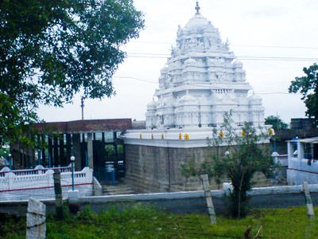
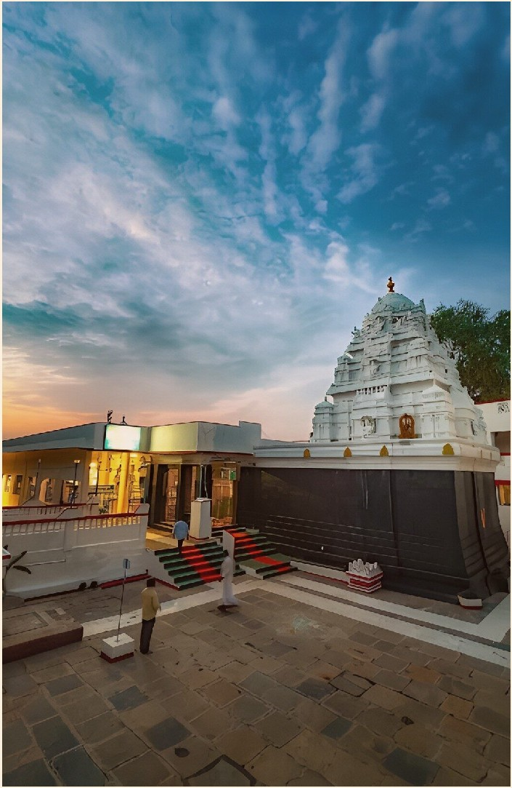
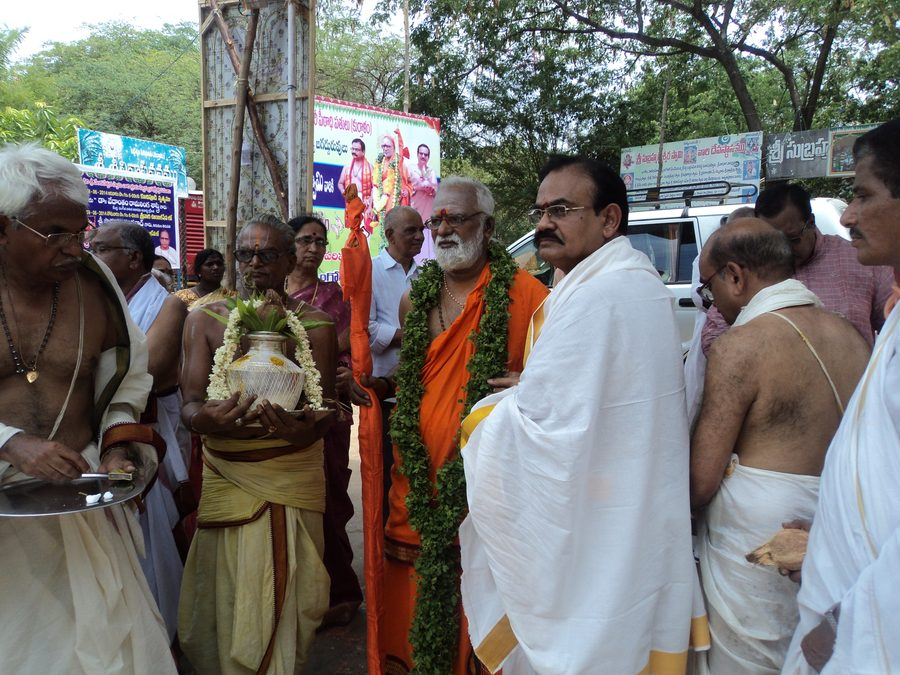

The grace of Tirumala, on the Srigiri Hills.
A spiritual home for generations of devotees since 1997.
Where Lord Balaji Blesses His Devotees
Experience the sanctity, serene architecture, and divine grace on the holy Srigiri hills.

Temple Architecture
Garbha Gudi and Gopuram constructed following traditional Vaikhanasa Agama Sastra principles on the holy Srigiri hills.

Sri Venkateswara Swamy
The 8'8" Mula Varlu carved from sacred Krishna Sila, bestowing divine blessings equal to the grace of Tirumala.

Spiritual Guidance
Blessed under the patronage of Sri Siddheswari Peetham, Courtallam, and founding guidance of Sri Aluru Venkata Ramana Rao Garu.
Srigiri, Ongole
A living kshetram of the Vaikhanasa Agama tradition — its history, governance, and daily life.
How Srigiri Began
Founding
Sri Siddeswari Peeta Palitha Srigiri Sri Venkateswara Swamy Vari Devasthanam was constructed by Sri Aluru Venkata Ramana Rao, his family, relatives, and close associates. The temple opened on 16th June 1997 and was handed over to Sri Sri Sri Siva Chidananda Bharathi Swamiji, then Peethadhipathi of Sri Siddheswari Peetam, Courtallam, Tamil Nadu.
Kshetra Palaka
Sri Abhaya Anjaneya Swamy temple was built by Sri Aluru Jwala Ramarao and Smt Suseela Devi, with sons Phani Kumar and Saravana Kumar (USA).
Present Leadership
The temple is run by His Holiness Sri Sri Sri Siddheswarananda Bharathi Swamiji, Courtallam. Detailed accounts are sent to the Peetam periodically.
Governance, Deities & Daily Life
Governance — The Dharmakarthas
With the founder Dharmakartha's support, the Srivari Vimanam and Mahamandapam took their present shape.
Sacred Deities & Offerings
Sri Vari Mula Varlu: offered by Sri Moravaneni Kotaiah, Smt Venkata Subbamma, and their sons, of Yerrabalem village, Korsepadu Mandal. The 8'8" Mula Varlu was carved from Krishna Sila by Maha Silpi Sri N. Ratnachari of Chennai.
Sri Vari Utsava Murthulu: (Srivaru with consorts Sridevi and Bhoodevi) was offered by Sri Devathu Musala Rao and Smt Kusuma Kumari of Ongole.
Gold & silver ornaments: 108 gold flowers were offered by the founder in 2006, used monthly for the Srivari Suvarna Ashtadala Padma Paadarchana Seva. The gold crown (Suvarna Kireetam) was donated by Sri Aluru Ramakoteswara Vamsee (USA). The Bangaru Chatari was donated by sixteen close associates of the Dharmakarthas' families.
Temple Staff & Honorary Roles
The Archaka selection committee — Sri Dr. Ganjam Srinivasa Murthy, Sri Parankusam Seetharama Charyulu, and Sri Maddipati Anantha Sesha Charyulu — oversees selection, with final approval from Swamiji. All staff are paid monthly, by bank transfer, for daily-wage service.
Transparency & Finance
Initially the temple had no Hundi. After repeated devotee requests, Sri Sri Sri Siva Chidananda Bharathi Swamiji directed one be provided; it was ceremonially opened by Sri G. Surya Prakasa Rao, IPS, then Addl. Superintendent of Police, Prakasam Dist. Hundi operations are banked with Union Bank of India.
Parakamani Utsavam: the periodic Hundi-counting event is conducted by a team of 40–60 — Union Bank employees, Dharmakarthas, and devotees drawn at random, including government officials, advocates, doctors, and businesspeople. The counted amount is announced to Lord Balaji by Dharmakartha-4, then credited to the temple account by Union Bank officials on the spot.
Visesha Parakamani: ornament appraisal is conducted periodically by a bank appraiser and insurance officer, in the presence of two district-cadre judicial officers. Item-wise weight and quality are recorded and the ornaments insured with a general insurance company.
Community Service
Srigiri Gosamrakshana Samithi (Goshala): was promoted and funded by Sri K.B.M.V. Subramanyam and Sri Jada Koteswara Rao Yadav. Milk and dairy products from the goshala are used for daily temple rituals; the cows are insured and monitored by veterinary doctors, with finances managed by Dharmakarthas 3 and 5 through Andhra Bank, Ongole.
Sri Giri Vidya Nidhi: provides financial assistance to economically backward Hindu students who have earned academic distinction. Its principal patrons are Founder Chairman Sri A.V. Ramana Rao and his sons, Dr. Srinivas Charan, Rajeev (USA), and Jai Sankar, together with the Dharmakarthas.
Prasadam schemes: Sasvatha Archana, Sasvatha Abhishekam, and Sasvatha Uchitha Prasadam — each scheme's funds are deposited into a dedicated bank account.
Srigiri Chinmaya Balavihar
Srigiri Devasthanam has partnered with Chinmaya Mission to conduct Sunday spiritual classes — Balavihar — for children aged 5 to 17.
Chinmaya Mission Swamijis from the Prakasam, Nellore, and Guntur districts support this program, helping impart cultural values, sacred scriptures, and spiritual discipline to the next generation.
Sevas at Srigiri
The most renowned sevas are Srivari Suvarna Ashtadala Padma Paadarchana Seva, Srivari Sukravara Abhishekam, and Srivari Prasada Padi Seva. Every seva below — daily, weekly, monthly, and occasional — is conducted according to Vaikhanasa Agama Sastra, the same tradition followed at Tirumala for centuries.
Daily Sevas
- Suprabhatam 5:00 – 5:30 AM
- Sahasra Namaarchana 6:00 – 7:30 AM & 5:00 – 6:30 PM
- Prasada Padi 8:00 – 9:00 AM
- Laddu Prasada Padi 8:00 – 9:00 AM
- Gopuja Performed in Srivari Gaukshetram
Weekly Sevas
- Sukravara Abhisheka Seva Fridays, 6:00 – 7:30 AM
- Suvarna Ashtadala Pada Padmaarchana 1st, 3rd & 4th Sundays and 2nd Saturday, 9:00 – 10:00 AM
- Anjaneya Swamy Aakupooja Tuesday & Saturday
- Anjaneya Swamy Abhishekam Tuesday
Monthly Sevas — by Telugu Month
- Srivaari Ashthanam Every month, on Sravana Nakshatram, 6:30 – 7:30 PM
Special Sevas
- Poolangi Seva Special festivals only
Venues
- Srivari Kalyana Mandapam Details available at Temple office
- Gaukshetram Kalyana Mandapam Details available at Temple office
Hindu Rituals / Life-Event Sevas
Enroll for a Seva or Book a Life-Event Ritual
For seva sponsorship, Kalyana Mandapam availability, or personal ritual bookings, please contact the temple authorities directly.
Divine Gallery
Photographs and recordings from Srigiri — daily sevas, festivals, and the holy temple.
Darshan at Srigiri
Everything you need to plan your visit — updated timings, visitor guidelines, and location.
Temple Opening & Darshan Timings
Devotees are welcome for peaceful darshan during the following daily schedule:
📵 Mobile Phones Strictly Prohibited
Mobile phones are not permitted inside the temple premises. Management reserves the right to confiscate any phone found inside. Devotees are kindly requested to comply with this policy, in keeping with the sanctity and spiritual power of this sacred space.
Visitor Etiquette & Guidelines
- Footwear is removed before entering the temple premises.
- Traditional dress is customary.
- Arjitha Sevas require traditional wear — panche or dhoti for men, saree for women.
- Photography is strictly restricted inside Srigiri Temple.